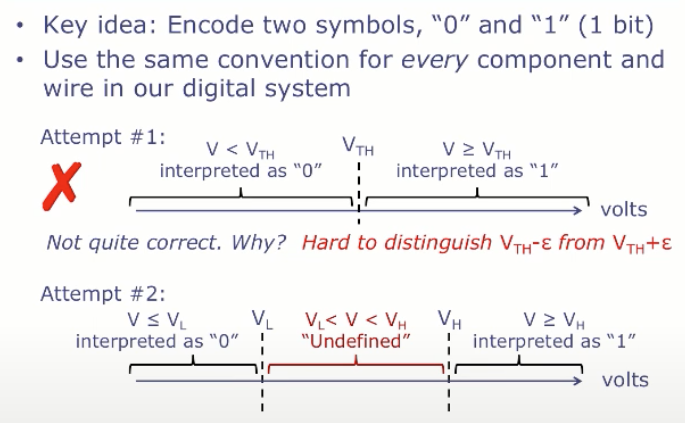
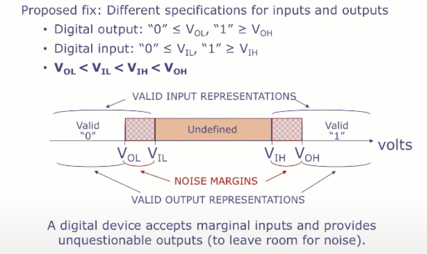
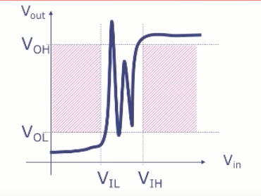

1. The Digital Abstraction
16/02/2022 By Angold Wang
1. Abstractions
Computer Programs
======================> Virtual Machines
Module 3: Computer Systems
Operating systems, virtual memory, I/O
======================> Instruction set + memory
Module 2: Computer Architecture
Assembly language, processors, caches, pipelining
======================> Digital circuits
Module 1: Digital Design
combinational and sequencial circuits
======================> Bits, logic gates
Atoms, Materials
These Abstractions:
- Are actually interfaces that let us reason about the behavior of our building blocks, without understanding the implementation details underneath.
- Are extremely long-lived, which live far longer than the specific implementations of these building blocks.
- Shielding the levels above from from the details of the implementation.
- Can limit complexity at each level, which shorten design time.
2. Analog vs. Digital Systems
- Analog systems represent and process information using continuous signals.
- Digital systems represent and process information using discrete symbols.
The reason why digital system are practically used everywhere and analog system are used only in very limited circumstances:
Digital Systems Tolerate Noise !!!
Which makes Digital systems can process information reliably at very high speeds.
3. Using Voltages "Digitally"


Voltage Transfer Characteristic (VTC)

- VTC must avoid the shaded regions (aka "forbidden zones") which correspond to valid inputs but invalid outputs
- The VTC can do anything when Vil < Vin < Vih.
- There's some amplification going on (ACTIVE, an amplifier or a transistor) which is injecting energy into the circuit when Vin > Vil.